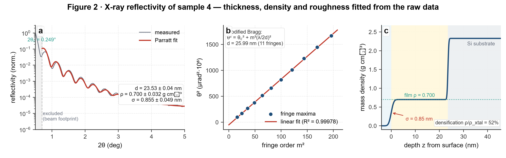
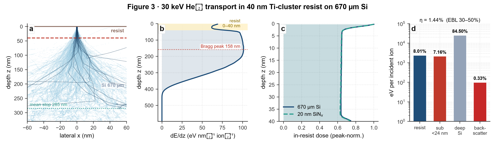
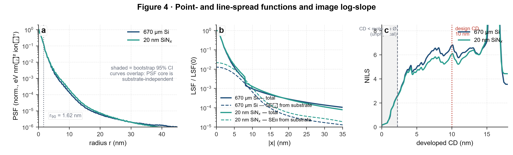
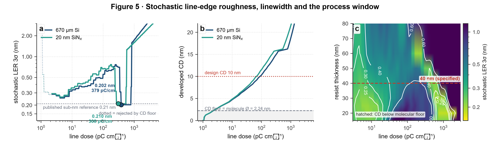
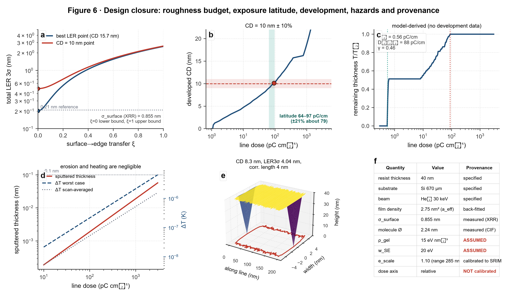

| spec | He+ 30 keV · 40 nm Ti-cluster resist · Si(001) 670 µm · CD target 10 ± 0.10 nm |
|---|---|
| calibration | e_scale=1.10 → rangeSi = 284.7 nm (SRIM 282.2, +0.90%); a_eff = 2.75 nm² (back-fitted to 0.21 nm); w_SE = 20 eV; ρ_gel = 15 eV/nm³; dose axis not calibrated |
| PSF / LSF | r90 = 1.62 nm; LSF FWHM = 2.25 nm |
| design floor | CDfloor = 2.24 nm (1 x molecular diameter from data/4.cif) |
| case | best dose (pC/cm) | best CD (nm) |
NILS | LER₃σ stoch (nm) | LER₃σ total (nm) |
CD=10 nm reachable | target dose (pC/cm) |
target NILS | target LER₃σ stoch (nm) |
exposure latitude (pC/cm) |
|---|---|---|---|---|---|---|---|---|---|---|
| bulk_40nm_Si670um | 379.0 | 15.74 | 25.66 | 0.202 | 2.573 | True | 92.6 | 6.85 | 0.487 | [63.98037663215541, 96.97314294819432] |
| membrane_40nm_SiNx20nm | 307.8 | 15.83 | 24.88 | 0.210 | 2.574 | True | 71.8 | 6.18 | 0.544 | [50.78212374238107, 71.81493285572616] |
| bulk_23.5nm_Si670um | 536.0 | 15.73 | 33.35 | 0.203 | 2.573 | True | 103.9 | 5.13 | 0.826 | [101.55905663252658, 130.94477818621422] |
| bulk_40nm_crystal_density | 143.6 | 15.78 | 19.34 | 0.269 | 2.579 | True | 26.0 | 6.85 | 0.479 | [21.10737929360118, 29.16786360260676] |
data/4.cif| formula | C120 H152 O28 Ti6 | FW | 2329.81 |
|---|---|---|---|
| crystal system | triclinic | space group | P -1 (#2) |
| Z / Z' | 1 / 0.5 | ρ_calc | 1.354 g/cm³ |
| R1 / wR2 | 0.0448 / 0.1267 | GoF | 1.064 |
| molecule extent | 2.2433583657912304 nm | Ti mass fraction | 0.123272713225542 |
| label | count | role |
|---|---|---|
| 2 | ||
| 2 | ||
| 2 | ||
| 2 | ||
| 4 | ||
| 2 | ||
| 2 |
| contrast | D0 = 0.56 pC/cm · D100 = 88 pC/cm · γ = 0.46 (model-derived; no development data) |
|---|---|
| sputter | Y = 3.78e-03 atoms/ion; removed = 1.76e-03 nm (He → Ti-cluster, Sigmund, negligible) |
| beam heating | <T>scan = 4.9e-08 K; <T>worst = 2.0e-07 K; safe = True |
| 3-D line | CD = 8.26 nm; LER₃σ = 4.04 nm; LWR₃σ = 4.04 nm; ξ = 4.0 nm |





